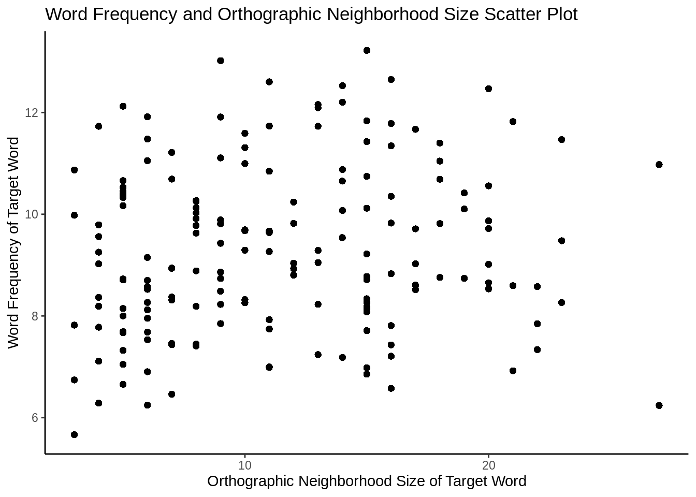

Chapter 4 Plotting
Now that we have a basic understanding of how to wrangle data, now we want to graphically explain the data we are wrangling. For this chapter we will be using ggplot package to further understand the data. However, before we go into plotting specific things about the data, we need to learn the grammar of plotting with ggplot in general
4.0.1 ggplot grammar
You can think of the grammar of graphics as a systematic approach for describing the components of a graph. It has seven components (the ones in bold are required to be specifed explicitly in ggplot2):
- Data
- data that you’re feeding into a plot.
- Aesthetic mappings
- How are variables (columns) from your data connect to a visual dimension? Horizontal positioning, vertical positioning, size, colour, shape, etc. These visual dimensions are called “aesthetics”
- Geometric objects
- What are the objects that are actually drawn on the plot? A point, a line, a bar, a histogram, a density, etc.
- Scales
- How is a variable mapped to its aesthetic? Will it be mapped linearly? On a log scale? Something else? This includes things like the color scale e.g., c(control, treatment_1, treatment_2) -> c(“blue”, “green”, “red”)
- Statistical transformations
- Whether and how the data are combined/transformed before being plotted e.g., in a bar chart, data are transformed into their frequencies; in a box-plot, data are transformed to a five-number summary.
- Coordinate system
- This is a specification of how the position aesthetics (x and y) are depicted on the plot. For example, rectangular/cartesian, or polar coordinates.
- Facet
- This is a specification of data variables that partition the data into smaller “sub plots”, or panels. These components are like parameters of statistical graphics, defining the “space” of statistical graphics. In theory, there is a one-to-one mapping between a plot and its grammar components, making this a useful way to specify graphics.
4.0.2 Example: Scatterplot Grammar
Let us say that we are interested in how specific word properties relate to one another, and how correlated they are. With this information we can learn specific detials about the nature of our linguistic stimuli, which is very important in psycholinguistics. So for this example we are going to plot the orthographic neighborhood size of the target word and word frequency.
mydata %>% ggplot(aes(x = OrthoN_T, y = Freq_T)) + # this defines the x and y axes of the plot
geom_point() + # this adds geometric objects
theme_update(plot.title = element_text(hjust = 0.5)) + # this line centers the title
xlab("Orthographic Neighborhood Size of Target Word") + # this line sets the label for x-axis
ylab("Word Frequency of Target Word") + # this line sets the label for y-axis
ggtitle("Word Frequency and Orthographic Neighborhood Size Scatter Plot") + # this sets the title for the plot
theme_classic() # this sets the theme for the plot
| Grammar Component | Specification |
|---|---|
| data | mydata |
| aesthetic mapping | x: OrthoN_T, y: Freq_T |
| geometric object | points |
| scale | x: linear, y: linear |
| statistical transform | none |
| coordinate system | rectangular |
| facetting | none |
4.0.3 Example: Histogram Grammar
Useful for depicting the distribution of a continuous random variable. Partitions the number line into bins of certain width, counts the number of observations falling into each bin, and erects a bar of that height for each bin.
Required aesthetics:
x: A numeric vector.By default, a histogram plots the count on the y-axis. If you want to use proportion (i.e., “density”), specify the y = ..density.. aesthetic.
- You can change the smoothness of the plot via two arguments (your choice):
bins: the number of bins/bars shown in the plot.binwidth: the with of the bins shown on the plot.
Let us say that we want to ask very, very specific questions about how some word properties relate to other word properties. For example, in this experiment we change one letter for a given letter position. for example (word-work) pair manipulates the 4th letter position while (worm-dorm) pair manipulates the 1rst letter position. Let us explore if the words in a particular letter position category vary in word frequency. The way we can do this is by using the facet_grid() function in ggplot.
mydata %>% ggplot(aes(x = Freq_T)) +
geom_histogram(bins = 20, alpha = .7) +
xlab("Word Frequency of Target Word") +
ylab("Count") +
ggtitle("Word Frequency Distribution for Target Words") +
facet_grid(~probe_position) +
theme_classic() 
4.0.4 Example: Density Grammar
Essentially, a “smooth” version of a histogram. Uses kernels to produce the curve.
Required aesthetics:
x: A numeric vector. Good to know:bwargument controls the smoothness: Smaller = rougher.
Let us say that we want to explore the same question from before, but we felt like the last graphic wasn’t as clear as we would want it to be. We could use a different graphing strategy such as the density plot to make it clearer to whoever is intepreting the data. Data is only as good as you can communicate and understand it. Observe the differences between the last code’s output and this code’s output
mydata %>% ggplot(aes(x = Freq_T)) +
geom_density(aes(fill = factor(probe_position), alpha = 0.05)) +
xlab("Word Frequency of Target Word") +
ylab("Count") +
ggtitle("Word Frequency Distribution for Target Words") +
scale_fill_discrete(name = "Probe Position", labels = c("1", "2", "3", "4")) +
theme_classic()